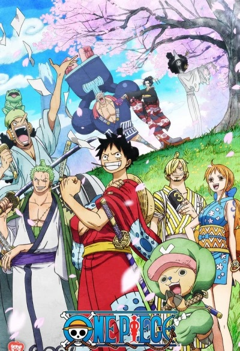
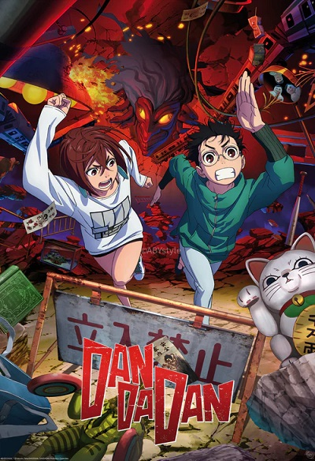

kaiju n° 8

Japón sufre de manera constante el ataque de monstruos de diversas formas y tamaños llamados KAIJU Kafka Hibino es un hombre de 32 años que desde niño soñaba, junto con su amiga de la infancia, con formar parte del Cuerpo de Defensa, pero viendo que esta posibilidad es algo imposible para él, se unió a los Monster Sweepers y trabaja como limpiador. Su vida dará un vuelco cuando conozca a Reno Ichikawa, un nuevo compañero de trabajo que ingresa a los Sweepers para ganar experiencia con los Kaiju y luego poder ingresar al Cuerpo de Defensa
one piece
El anime One Piece es una popular serie de televisión de animación japonesa producida por Toei Animation y basada en el manga de Eiichiro Oda. Estrenada en octubre de 1999, narra la historia de Monkey D. Luffy y su tripulación, los Piratas del Sombrero de Paja, en su búsqueda del legendario tesoro One Piece para convertirse en el Rey de los Piratas. La serie cuenta con más de 1.100 episodios además de varias películas, especiales de TV y OVAs, y se ha exportado a numerosos países.La franquicia incluye 15 películas, siendo One Piece Film Red la más taquillera.
dan da dan
DAN DA DAN es una popular serie de anime de acción sobrenatural basada en el manga de Yukinobu Tatsu, producida por Science SARU y estrenada en 2024. La historia sigue a Momo Ayase, que cree en fantasmas, y a Ken Takakura ("Okarun"), que cree en extraterrestres; cuando ambos se ven obligados a aceptar que ambos fenómenos son reales, se ven envueltos en una aventura que les da poderes y los enfrenta a amenazas paranormales.La serie mezcla terror, acción, comedia y romance con elementos de ciencia ficción.
sakamoto days
Tarō Sakamoto era un legendario sicario, temido por todos, llegando a ganarse el estatus de leyenda en el bajo mundo. Sin embargo, un día encontró al amor de su vida, abandonó el mundo de la criminalidad, se casó, tuvo una hija y subió mucho de peso. Ahora, Sakamoto trabaja en una tienda de conveniencia llevada por su familia, viviendo una vida feliz. No obstante, el mundo de la criminalidad todavía lo persigue. Sakamoto, junto con Shin, su antiguo joven aprendiz el cual cuenta con telepatía y trabaja en la tienda.
DemonSlayer
"Demon Slayer" (Demon Slayer: Kimetsu no Yaiba) es una popular franquicia de manga y anime japonesa que sigue a Tanjiro Kamado, un cazador de demonios que busca curar a su hermana Nezuko, convertida en un demonio, y vengar la muerte de su familia. Conocida por su impresionante animación y emocionantes escenas de acción, la historia se ha adaptado a múltiples temporadas de anime, películas y videojuegos La serie de anime, producida por Ufotable, es aclamada por su espectacular animación.Es una obra original de Koyoharu Gotouge
AttackOnTitan
Attack On Titan (Shingeki no Kyojin), creado por Hajime Isayama, es una obra que revolucionó el manga y el anime desde su debut en 2009. Con un mundo distópico dominado por titanes aniquiladores de humanos y una humanidad reducida a vivir tras murallas colosales, la historia sigue a Eren Jaeger, un joven impulsado por la venganza tras ver a su madre ser eliminada por un titán. A lo largo de 34 volúmenes de manga y cuatro temporadas de anime, Attack On Titan se transformó de una historia de supervivencia a una compleja narrativa de guerra, política y destino.
Fullmetal Alchemist
Fullmetal Alchemist: Brotherhood,es la segunda adaptación al anime del manga Fullmetal Alchemist, escrito originalmente por Hiromu Arakawa. Fue dirigido por Yasuhiro Irie y escrito por Hiroshi Onogi. La serie se estrenó el 5 de abril de 2009 en MBS-TBS y finalizó el 4 de julio de 2010 constando en total de 64 episodios.Aunque después de la trama principal del manga, Fullmetal Alchemist: Brotherhood tiene algunas diferencias claras de la obra original como la mayoría del contenido omitido en los primeros episodios
DeathNote
Death Note es una serie de manga escrita por Tsugumi Ōba e ilustrada por Takeshi Obata, y cuya adaptación al anime fue dirigida porTetsurō Araki. La historia se centra en Light Yagami, un estudiante de preparatoria que encuentra un cuaderno sobrenatural llamado «Death Note», con el cual es capaz de matar personas si se escriben los nombres de éstas en él mientras el portador visualiza mentalmente la cara de quien quiere asesinar.6 Light intenta eliminar a todos los criminales y crear un mundo donde no exista la maldad